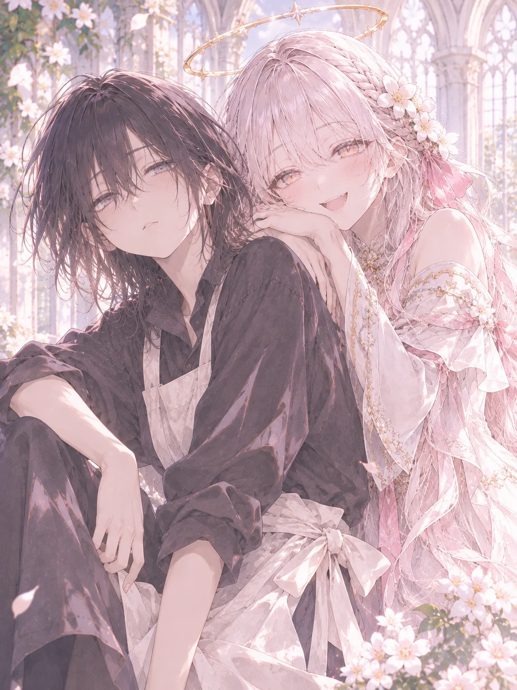

重い瞼を開けると、見覚えのない天井があった。
体が軽い。いつもの、頭に石を積まれたような二日酔いがない。
そして、ピカピカに磨かれた床が見える。ゴミ袋と脱ぎ散らかした服、コンビニ弁当の容器とストロング缶に埋もれて、半年ほど存在を確認できていなかったあの「床」が。ちゃんと木目を晒している。
ログハウスみたいな丸太の壁に、ぴしっと片付いた机。部屋は清潔感のある、あったかい木の匂いがする。
「え、ここどこ……？」
部屋の隅の鏡を覗くと、間違いなくあたしの顔だった。違うのは、クマは消え、肌はつやつや、髪はさらさらで健康的なところ。
「んー？ ……夢、か……？」
腕を組みながら、最後の記憶をたぐり寄せる。
新卒三ヶ月で会社を辞めて、ニート歴二年。昼過ぎに起きてパチンコに行き、夕方は仕事終わりのセフレ（日替わり、火曜担当）と一戦交える。帰らせたら酒とタバコで一服して、夜中に一人で致して。目が冴えて、またストロング缶、ヤニ、ストロング缶、ヤニ、また一人で致して——で、そのまま意識がとろけた。
で、今に至ると。
毎日こんな感じのヘドロみたいな自堕落な生活だ。
……振り返ってみると、我ながらなんて虚しい一日なんだろう。
まあいいか。夢だろうが何だろうが、どこにいても一緒だし。
ふと目に入った机の上の額縁には、ミミズが蠢くような見たこともない文字が書いてある。なのに、なぜか読めた。
『聖女付き選抜試験 首席 ニナ』
横には『貴殿を聖女付きに任ずる』と書かれた任命通知。本棚の本は背表紙がくたびれるほど読み込まれていて、余白には書き込みがびっしりあった。
壁の肖像画には、幸せそうに微笑むあたしと同じ顔。知らない誰か——顔が同じで中身が正反対の誰かが、ここで暮らしていたらしい。
とりあえず、身につけている首元まで詰まったワンピースのボタンを二つ外す。胸元にボリューミーなフリルが付いているのが無性に嫌だったが、着替えるのも面倒で、そのまま外に出た。
「え……何これ」
森の中に石畳の道。可愛らしい三角屋根の家。丘の上では風車がのんびり回っている。その非日常な景色から、日本じゃないことは明らかだった。
「ニナちゃん、首席合格おめでとう！」
「聖女様の付き人だなんて。ご両親も鼻が高いことでしょうね！」
「ほら持っていきな、お祝いだ！」
家を出るなり、おばさんたちに囲まれ、パン屋のおじさんに焼きたてのパンを押しつけられ、小さな女の子には花をもらう。
「えっ、あの、ちょっと。あたし……」
そう言い淀んでいる間に、ギャラリーたちは去っていった。
何これ。『ニナ』、超人気者なんだけど。
もらったパンをかじりながら歩いていると、右手が勝手に胸元をまさぐった。
ない……。タバコが、ない。
一日一箱吸っていたあたしの肺が騒ぎはじめる。健康的な体にリニューアルされても、ヤニへの愛は引き継がれているらしい。
「あのー、コンビニどこすか？ タバコとか酒とか売ってる店」
薪を割っていたおじさんに尋ねると、きょとんとした顔をした。
「たばこ？ さけ？ 聞いたことないねぇ。神様がお嫌いになるようなものは、この村にはないんだよ」
フォフォフォ、と笑って、おじさんは薪割りに戻った。
もういい加減にヤニもアルコールも切れてきた。もう夢から覚めてもらっていいよ、と自分の頬をつねる。
「えっ、痛っ……！」
普通にめちゃくちゃ痛かった。景色は何も変わらない。
ということは——
「……は？ え、もしかして、ガチの異世界？」
まだ信じられないけど、あたしはどうやら異世界に来てしまったらしい。
絶望で立ち尽くす。どこにいても一緒とか言ったけど、前言撤回。
帰りたい。箱で買ったストロング缶とセブンスター、そして日替わりのセフレ達が待つ、あのゴミ屋敷に今すぐ。
〜♪〜♪〜♪
そこへ、あたしの気分と真逆の晴れやかなファンファーレが鳴り響いた。
「聖女様が通るぞ！」
村人たちがわらわら集まってきて、石畳に花道ができる。白いローブの神官の行列の後ろから、ゴトゴトと金ぴかの屋根なし馬車がやってきた。
アニメでしか見ることのないその光景に、思わず目が吸い寄せられた。
そこに乗っていたのは、二人の女。
まず目に入ったのは……
手前のお姉さん。陽にきらめく金髪に、大きな胸。ターコイズブルーの瞳、上品な微笑みに、大きな胸。あたしより五つぐらい上だろうか。そして何より、胸が大きかった。
年上好きのあたしには完全に目の保養だ。思えばセフレも全員年上だったな……。彼女たちの裸を思い出してちょっとムラッとしてしまい、咳払いでごまかす。
その隣に、もう一人女の子がいた。
ピンクがかったブロンドに、明るい茶色の瞳。綺麗というより可愛い系。……あっちはあたしと同い年ぐらいかな。まあ、あたしのタイプじゃない。
その子はまるで金髪のお姉さんとは様子が違った。キョロキョロと、とにかく落ち着きがない。
厳かな行列のど真ん中で、なぜか片手にクッキーを持っていた。もぐもぐしながら人混みを見回して——パッと目を見開く。
「あーっ！ アンだ！ やっほー！ この前お泊まりした時のアンのパンツ、まだうちにあるよーっ！」
馬車から身を乗り出して、両手をぶんぶん振っている。呼ばれた『アン』ちゃんは真っ赤になって顔を伏せていた。
そりゃそうだよ、可哀想に。ああいうデリカシーのないガサツな女って、どこの世界にもいるんだな。
そうしている間にも、その女は激しく手を振る。付き添いで馬車のそばを歩く神官のハゲ頭に、クッキーのかすがパラパラと粉雪のように降り注いでいた。
「メ、メル様っ！ 身を乗り出すのはおやめください！ 落ちてしまいます」
神官が慌てて注意すると、ピンク髪は「やば」という顔をして、ぴたりと背筋を伸ばした。何事もなかったみたいな、スンとすました顔で。
その様子がちょっと面白くて、薄ら笑いが漏れた。
——すると。
その子が、不意にこっちを見た。
ばっちりと、目が合う。
大きな目をにっと細めて、ちろっと小さく舌を出す。
「……えっ」
反応する間もなく、馬車はゴトゴトと通り過ぎていった。ファンファーレの音が遠のいたのを見送り、花道を作っていたギャラリー達も持ち場に戻っていった。
「いやぁ、クラリス様もメル様も、お綺麗だったねぇ」
隣のお婆さんが、うっとりと目を細めている。
「今の人たち、何なの？」
「おや、あんた、隣の町から来たのかい？」
お、これは、RPGでしか聞かないセリフだ。なんてちょっとテンションが上がってしまった自分が情けない。
さすがに「異世界から来ました」とは言えないので、こくりと頷いておく。
「あのお二人は聖女様だよ。クラリス様に、メル様。神様にお仕えする、この村で一番名誉なお役目なんだ」
クラリス様というのが、さっきのばくにゅ……げふんげふん、金髪にブルーの瞳のお姉さんのほうだということは、なんとなく察した。
てか、あのピンク髪の女も聖女ってこと？ あんな繊細さのかけらもなさそうな奴に神聖な役割が務まるのか甚だ疑問だ。
神様？ お仕え？
会社でいう栄転的なあれかな？
とりあえず、おめでたいことなんだろう。
三ヶ月で会社を辞めるようなあたしには、一生縁のない話だ。
まあどうでもいいや。それよりタバコ——と踵を返したとき。
「ニナさん！ もうっ、やっと見つけました！ 研修の時間ですよ！」
灰色のローブを着た眼鏡の女の人が息を切らしながら駆け寄ってきた。あたしが声を出す間もなく、腕をがっちり掴んで引っ張っていく。
「……は？ 研修？ ていうかあんた誰？」
「聖女付きの研修です！ 私はあなたの教育係です。いいから早く行きますよ。明日から聖女様のために働いていただかないといけないんですから！」
「いや、待って。あたし、働くなんて一言も——」
「何をおっしゃってるんですか！ 首席合格までされたのに！」
「それ、あたしじゃないんだけど」
「はいはい、ニナさん。冗談はそこまでです。さあ、急ぎますよ！」
そのまま、がっちり腕を掴まれて引きずられていく。
あたしは天を仰いだ。
労働。
この世で一番嫌いな言葉。
タバコもない。酒もない。セフレもいない。
そんな中で、世話係なんていう強制労働をさせられることになるなんて。
ああ……、あたしは、なんて地獄に来てしまったんだろう。
